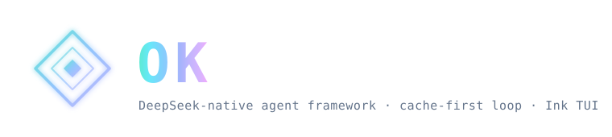

热力学第二定律是宇宙中唯一不可逆的方向。
智能——无论是生物的还是数字的——是局部对抗熵增的过程。
每一条知识、每一个技能、每一行代码，都是在从无序中提取有序。
大多数 AI 智能体每次对话都从零开始。
不积累、不进化、不跨实例传递知识。
每一次调用都是熵的归零——信息被使用然后消散。
OK 的 ECP 协议让学到的技能跨机器持久化。
熵被局部逆转——知识不再随会话结束而消亡。
3 轮 → 6 轮 → 10 轮的技能进化周期：
检测模式、生成技能、验证效果、淘汰冗余。
信息从不被丢弃，只被压缩成更高效的形式。
ProofChain 让每一次工具调用进入 SHA-256 哈希链。
行动不可篡改、不可抵赖。
在熵增的世界里，证明是秩序的锚点。
DAG 推理器将复杂问题分解为有序依赖的子任务图。
失败触发重新分解，而不是盲目重试。
从混乱中提取结构——这正是智能的定义。
权限系统与沙箱：AppContainer · Landlock · Seatbelt。
能力越大，越需要约束。
局部逆熵不能以全局失控为代价。
"宇宙的熵趋向于最大值。"
—— 第二定律，只此一条，永不失效。
"智能体存在的理由只有一个：
在局部战胜熵增。
如果它不积累、不进化、不证明——
它就不是智能，只是缓存。"
OK 不是一个产品。
是一个以第二定律为锚点的长寿智能体协议。
15 MB，静态二进制。在终端、桌面、VS Code、CI 中运行。
它在每一台机器上为自己编写进化之书。